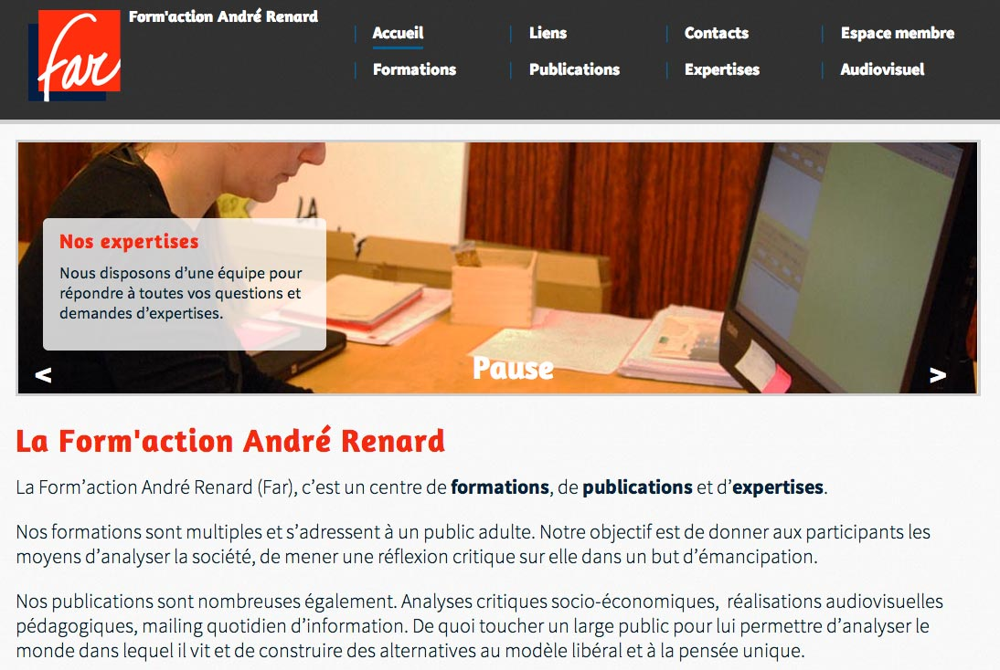
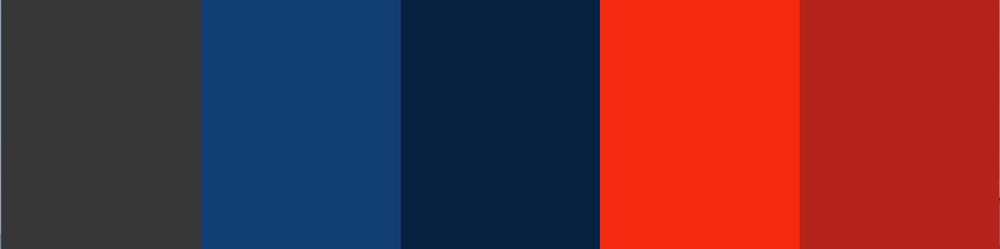

Présentation de Annabelle Buffart / @yoseihana
abDesign vous présente son tout dernier projet en date: www.far.be

var abDesign = {
name: 'Annabelle Buffart',
bachelor: [
'Communication',
'Infographie - web section'
],
website: 'http://anna.buffart.eu',
twitter: '@yoseihana',
linkedin: 'http://be.linkedin.com/in/annabuffart',
jobs: {
coFounder: 'Café Numérique Arlon',
webIntegrator: 'VAConsulting (starting July 1st)'
},
passions: [
'Web',
'Geekerie',
'Makeup',
'Gaming'
]
};
Avoir une vision concrète de mon futur professionnel.
Un projet avec un client, la Form'action André Renard.
ABSL au sein de la FGTB
Refonte du site www.far.be
La FAR en deux mots :
La FAR est une association sans but lucratif créée en 1963 à Liège (Belgique)[...]
"Y a du boulot"
Site humain, pas de notions syndicales avec des métallos en chasubles rouges.
Tonalités de rouge, bleu, gris et blanc
Police:
Le site est construit avec le fichier function.php
Plug-in: gestion de membres sur une même adresse email
//TODOEspace membre avec centre de ressources des documents de formations
Mise à jour possible par les membres de la FAR via l'administration personnalisée de Wordpress
Architecture de navigation sur 2 lignes
Liens permanents disponibles en bas de page
Nouveau logo
Template emailing en accord avec le design du site
jQuery Mobile
Couleurs du logo utilisées dans le site
Your work is going to fill a large part of your life, and the only way to be truly satisfied is to do what you believe is great work. And the only way to do great work is to love what you do. If you haven't found it yet, keep looking. Don't settle. As with all matters of the heart, you'll know when you find it.
Steve Jobs
Merci de votre attention
Des questions?
Proudly powered by reveal.js